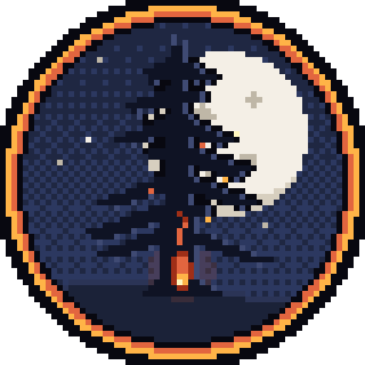

Día 1 · mañanaHaz copia de seguridad cada vez que termines de jugar: en «Tu partida» → «Exportar partida». Si el navegador borra los datos, la recuperas con «Importar partida».
Pulsa Intro para entrar

Día 1 · mañanaMantén pulsado para avivar el fuego · suelta para bajarlo (o la barra espaciadora)
Gira el móvil: la posada se juega en vertical